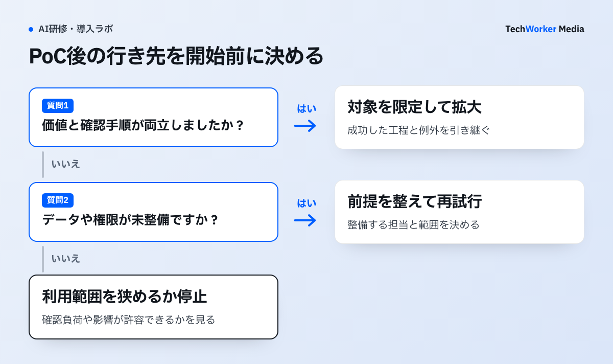

生成AIを試してみても、「便利だった」で終わると導入の判断ができません。PoC（小規模な実証）では、対象業務を絞り、何を測れば続行・中止を決められるかを先に置きます。NISTのリスク管理の枠組みを参考に、候補の比べ方を考えます。
NISTの管理枠組みを、PoCの判断に使う
“govern, map, measure, and manage risks”

NISTは、生成AIリスクをGovern、Map、Measure、Manageの機能で扱うと説明します。続く自社図は4機能の対応図ではなく、価値と確認手順、データと権限の結果から、拡大、再試行、縮小・停止を決める終了判定です。
生成AIのPoCテーマは、どう絞りますか？
高頻度で、入力と完成条件が分かり、人が結果を確認できる業務を優先します。
NISTの生成AIプロファイルが示すGovern、Map、Measure、Manageの観点を、テーマ選定表の統制、状況把握、測定、対処へ対応させます。
テーマは、どんな手順で絞ればよいですか？
外すテーマを決め、4軸で比べ、判定条件を置いてから最難関の工程を試し、結果から次の計画を決めます。
手順1：最初に外すテーマを決めます。取り消しにくい処理を、最初の候補から外します。自動送信、採否の自動判定、確定処理、権限変更は、小さな検証に向きません。データの所在・権限が不明な業務も止めます。
AI事業者ガイドライン第1.2版は、利用者を含め、ガバナンス、安全性、プライバシーを共通指針として整理しています[1]。PoCでも、速さと確認責任を分けます。
候補を集めるときは、現在の業務で繰り返している手順を書き出します。依頼を受ける、資料を探す、下書きを作る、確認して送る、といった単位です。AIに任せる部分と、人が確定する部分を混ぜずに済みます。担当者の印象だけで決めず、入力、参照資料、承認者、例外処理を一つずつ確認します。
工程ごとの任せ方の決め方は、AIに任せる業務の決め方（業務図ラボ）で扱っています。
「便利だがPoCにしない」候補が出ても、失敗ではありません。データの整理、権限設計、業務ルールの明文化が先に必要だと分かれば、導入順序の判断材料になります。
手順2：候補を4軸で比べます。比べる軸は、次の4つです。詳しい扱いは、下の表にまとめました。
- 業務価値：何の待ち時間を変えるか。
- データ準備度：資料、権限、入力範囲を説明できるか。
- 確認負荷：誰が原資料へ戻るか。
- 実行意欲：実案件で試せるか。
Microsoftも、選定時に能力、データ、スキル、コストを確認するよう示しています[2]。4軸はその翻訳で、公式の採点表ではありません。
手順3：成功・停止・拡大の条件を、開始前に置きます。「根拠を確認できない出力は採用しない」「判断不能時は有人レビューへ渡す」と決めます。NISTは、利用文脈、ガバナンス、評価、管理を扱っています[4]。記録と例外を残します。
問い合わせ下書きの判定票には、参照資料を選べたか、資料にない条件を補わなかったか、確認者の負荷が許容できたかを残します。価値があっても権限が未整備なら、成功として広げず、整備へ戻します。
終了時の選択肢は、成功か失敗かの二択にしません。
- 価値と確認手順が両立した業務は、対象部門を限定して拡大します。
- 価値はあるがデータや権限が未整備なら、前提を整えてから再試行します。
- 確認負荷や影響が許容できない場合は、利用範囲を狭めるか停止します。
Google掲載のXero事例では、候補ツールを四段階評価し、四仮説を60日間、8部門の250人で検証しています[5]。仮説と評価条件を、先に置いた例です。
手順4：いちばん難しい工程を、小さく試します。簡単な要約だけでは、本番価値は分かりません。根拠資料の選別、例外の差戻し、入力可否を試します。Microsoftは、投資前に最難関の工程を検証することを勧めています[3]。
問い合わせ回答の下書きなら、正しい文案を生成できたかで終わらせません。参照すべき社内資料を選べたか、資料にないことを断定しなかったか、例外を誰へ渡すかまで確認します。要約業務なら、数字・固有名詞・期限を原文へ戻って確認できるかを見ます。
研修も、対象業務を匿名化し、入力範囲、原資料との照合、判断不能時の相談を、一つの演習にします。対象者には、実際にその業務を担い、例外や繁忙期を知る人を含めます。研修中に出た質問、止まった手順、判断が割れた例は、教材・利用ルール・データ整備のどこへ戻すかを分類します。
手順5：検証結果を、次の研修と導入計画に反映します。価値が確認できたら広げ、準備が弱ければ整備へ戻り、確認負荷が高ければ範囲を狭めます。AIと人の判断の境界は自明ではありません[6]。
次の部門へ渡すのは、成功したプロンプト集だけではありません。対象業務、入力してよい情報、参照した原資料、確認者、例外、停止条件を、短い実施記録として渡します。別部門は、自分たちの業務差分だけを確かめられます。
PoCでは、どんな失敗が起きやすいですか？
便利そうで選ぶ、簡単な工程だけ試す、条件を決めずに始めるの3つが代表的な失敗です。
- 便利そうという理由で選ぶ。確認作業が増える検証になります。
- 簡単な要約だけで価値を判断する。最難関の工程を避けたまま成功を宣言すると、本番展開後に確認者の負荷や誤利用が表面化します。
- 「便利だった」だけで投資判断をする。広げる、整備へ戻る、範囲を狭める、のどれかを決めます。
- 条件を決めずに始める。PoCを続けること自体が目的になります。
- 研修・業務設計・技術設定を、別々の施策にする。同じ検証記録から直すことが、定着への近道です。
小規模PoCは、全社ROI、長期定着、法令適合を証明しません。ベンダー事例も、再現を保証しません。認証・権限、個人情報、外部送信など高影響の業務は、専門家レビューと技術統制を先に置きます。
4つの軸は、弱いときにどう扱えばよいですか？
合計点で並べず、弱い軸を、今回の検証で改善するか前提として別に解くかを記録します。
| 軸 | 見ること | 弱いときの扱い |
|---|---|---|
| 業務価値 | 何の待ち時間を変えるか | 価値が高くても、他の軸が弱ければ、その軸の扱いを記録する |
| データ準備度 | 資料、権限、入力範囲を説明できるか | 原資料へのアクセス権が整理されていなければ、今回はデータ整備を優先する |
| 確認負荷 | 誰が原資料へ戻るか | 高い場合は、出力の利用範囲を下書きや論点抽出に限定して試す |
| 実行意欲 | 実案件で試せるか | データが整っていても、利用者が自分の仕事として困っていなければ、研修後に使われない可能性がある |
4軸は、Microsoftの選定観点を踏まえた整理です。公式の採点表ではありません。
次の一歩は何から始めればよいですか？
部門ごとに現在の繰り返し手順を書き出し、外すテーマと候補を分けることから始めます。
- 各部門で、繰り返している手順を、入力・参照資料・承認者・例外処理まで書き出します。
- 取り消しにくい処理と、データの所在が不明な業務を、候補から外します。
- 残った候補を4軸で比べ、成功・停止・拡大の条件を先に書きます。
関連：研修の効果測定と、Copilot×BPRも参照してください。
出典と確認範囲
確認日：2026年10月6日。製品仕様、契約、助成要件は変更されるため、実施時点の公式情報を確認してください。